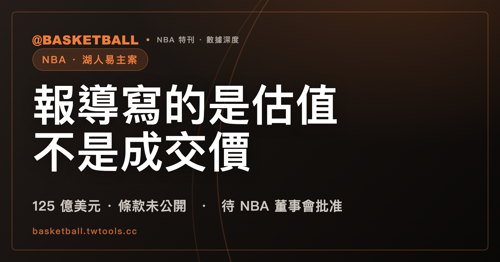

湖人易主案的 125 億美元是估值口徑，交易尚待 NBA 批准
多家媒體報導的 125 億美元是球隊估值口徑的數字，不是誰已經付出的價格。湖人隊易主案的條款一項都沒有公開，NBA 董事會也還沒有表決，目前能確定的只有雙方達成協議。

NBA 專題｜球團易主與聯盟制度
先看一件怪事。
2026 年 8 月 12 日，這樁交易的雙方都出面講話了。買方 Bob Iger 與 Josh Kushner 發了聯合聲明，賣方 Mark Walter 也發了聲明。兩份聲明加起來講了榮幸、講了對 Jerry Buss 與 Jeanie Buss 的敬意、講了長期承諾，唯獨沒有出現任何一個數字。
同一天滿天飛的 125 億美元——媒體報導中的球隊估值——一個字都不在那兩份聲明裡。
這個數字最早由 ESPN 記者 Ramona Shelburne 報出，來源是匿名消息人士。之後 CNN、CNBC、美聯社、Variety、Sportico 也都報了同一個數字，援引的一樣是未具名人士。美聯社那句交代得最清楚，它寫消息人士以匿名為條件受訪的理由是「因為雙方都沒有透露具體細節」（because neither side revealed specific details）。
NBA 官方到目前也沒有說話。聯盟的新聞發布管道 pr.nba.com 上，湖人隊標籤頁列得出 10 篇球隊相關新聞稿，裡面沒有一篇提到這樁交易；Josh Kushner 的標籤頁根本不存在，直接回 404。相對地，2025 年 Mark Walter 那筆收購，聯盟是發過正式新聞稿的。
所以現在的狀態只有一句話可以講：已達成協議，待 NBA 董事會批准。不是已經易主，不是已經賣掉，也不是已經批准。
125 億美元在公開報導裡是估值，不是付出的錢
先把口徑講在前面：就公開報導所採用的說法而言，125 億美元是一個「球隊估值」的數字，而且它的來源等級只到匿名消息人士。
ESPN 第二篇稿子的原文是「at a $12.5 billion valuation」。CNBC 寫的是「The deal values the team at $12.5 billion」，並註明消息來自一名熟悉此事、未獲授權公開談論交易條款的人士。Variety 的寫法是「The deal values the NBA team at $12.5 billion」，來源是接近交易的消息人士。三家的寫法都是把 125 億說成對球隊的估值，不是「以多少錢成交」。
估值和成交價的差別，在這樁交易裡不是文字遊戲，而是有具體的東西卡在中間。
第一，賣的不是全部股權。NBA 官方 2025 年 10 月 30 日的新聞稿寫明，自 1979 年 Jerry Buss 買下球隊以來持有多數股權的 Buss 家族，在 Mark Walter 那筆交易之後「will retain an ongoing interest」——保留一份持續的權益。官方原句沒有給百分比。約 15% 這個數字出自 Sportico 與 CBS Sports 的報導，不是聯盟背書的數字。
第二，這次賣的範圍也不是整個 Walter 的體育版圖。據 ESPN、CNBC、CBS Sports 三家報導，本次出售只涉及 Walter 手上的湖人權益，不含道奇隊，也不含 WNBA 的洛杉磯火花。ESPN 的原句是「Walter, 66, is selling only the Lakers in this transaction」。不過交易條款既然未公開，這三家的一致說法就只能停在報導層，不等於已經被合約文件證實的完整標的範圍。
第三，買方會拿到控制權，這一點有具名來源。Thrive Capital 的代表對 Sportico 具名表示，Josh Kushner 將擔任 controlling owner。CNN 的版本則帶滿情態詞：「If approved, the source said Kushner would be the controlling owner」——如果獲准，Kushner 才會是控制人。
把這三件事疊起來，就會知道為什麼那個數字不能直接讀成買方要匯出去的金額。Sportico 自己做過一次推算：既然 Kushner 已經表明 Buss 家族會續留，交易規模「right off the bat」就降到 106 億美元。但那家媒體同一段話立刻自己踩煞車——球隊的 cap table 並未公開，也不清楚誰要退出，所以 106 億是「an absolute max」，一個絕對上限。這是媒體依未公開資料所作的推算，不是任何人揭露過的付款金額。
至於買方實際支付多少現金、買到多少百分比的股權，公開資料查不到。這兩件事沒有官方版本，也沒有具名版本。
來源這一層還有一個必須說清楚的細節：多家媒體報同一個數字，不等於多個獨立來源。就 125 億這個估值數字與未公開條款而言，各家援引的都是未具名人士。Sportico 與 Yahoo Sports 明寫轉引 ESPN；美聯社則另有非 ESPN 轉述的報導文本，它自己的消息人士是向該社匿名發言的。但在本文取得的證據裡，找不到足以判定這些匿名消息人士彼此獨立、或其實是同一個人的資料。
交易雙方確實有具名聲明，Iger 與 Kushner、Walter、Thrive 代表都出面講過話。那些聲明沒有一句提到報導中的 125 億估值，也沒有一句提到任何條款。
中文報導寫得出「估值」，只是寫在 2025 年那一筆上
口徑會漂移，不是中文世界才有的事。英文端在同一天就分成兩派。
用估值口徑的有 CNBC、Variety、Sportico、Front Office Sports，以及 ESPN 的第二篇稿子。用價格口徑的有美聯社、CNN、ESPN 的第一篇稿子、NBC News。同一家 ESPN 的兩篇稿子用詞不同：首報寫「for $12.5 billion, a record-breaking price」，反應稿的標題卻是「$12.5 billion valuation」。NBC News 更直接，標題寫 120 億美元，內文寫 125 億美元。
中文端的情況，可以量測到什麼程度？
窗期 2026 年 8 月 12 日到 8 月 18 日、報導主題為本案、標題或內文出現 125 億這個表述、而且取得原始頁面本身——四項都符合的獨立編輯來源有 10 家。中央社的通稿被 7 個平台刊載，依同稿源歸戶只算 1 家；若照刊載平台計數，這一家就會被灌成 7 家。
在這 10 家裡，來源層把 125 億寫成付出的金額的有 8 家，寫成估值的有 0 家，另外 2 家因為跨篇口徑不一致或標題與內文不一致而落在「不明」。8 加 0 加 2 等於 10。
這組數字只描述這 10 家、這個窗期、這個納入條件下的樣本。它是一份定向樣本，不是台灣媒體的母體，也不能拿來推論沒被抓到的那些。
樣本裡最值得看的不是比例，是同一篇稿子內部的落差。
中央社、NOWnews、三立新聞網、民視新聞網都在同一篇報導裡寫過「當時對湖人隊的估值為 100 億美元」——講的是 2025 年 Mark Walter 從 Buss 家族買下控制權那一手。同一篇的上一句或下一句，125 億就成了「破紀錄價格出售」「買下」「收購」。
詞彙不缺。「估值」這兩個字，在同一批稿子裡就寫得出來，只是沒有套到 2026 年這筆的數字上。
另一個形狀出現在標題與內文之間。ETtoday 運動雲的首發稿內文寫「這筆交易對湖人隊的估值高達破紀錄的 125 億美元」，8 月 17 日的續稿也寫「以破紀錄的 125 億美元估值」；同一家首發稿的標題卻是「3980 億天價被前迪士尼執行長、創投巨擘買下」。民視新聞網首發稿內文寫「交易估值高達 125 億美元」，標題是「天價售出」。內文採了估值口徑，標題把它推回價格。
還有一家被納入條件擋在門外：風傳媒那篇從頭到尾寫的是「以超過 120 億美元的天價完成收購」，沒有出現 125 億這個表述，因此不計入這 10 家。
這裡不做誰對誰錯的判斷，也做不了——交易條款沒有公開，沒有人手上有一份可以拿來對答案的合約。英文端在同一週也分成兩派，中文端的落差落在同一條軸上。
邁阿密海豚母公司也有一個 125 億，牛仔還有一個 155 億
把數字放進歷史脈絡看，第一件要做的事是分堆。北美職業運動的球隊金額至少有四種口徑，混在一起排名就會得到看起來很壯觀、但沒有意義的結論。
口徑一，控制權交易、用整隊估值表述
- 洛杉磯湖人 2026：報導中的 125 億美元估值，狀態是待 NBA 董事會批准。
- 洛杉磯湖人 2025：Mark Walter 買下 Buss 家族控制權，報導寫的是約 100 億美元的球隊估值，NBA 董事會 2025 年 10 月 30 日一致通過。
- 波士頓塞爾提克（Boston Celtics）2025：估值 61 億美元；ESPN 另提到 2028 年取得完全控制權後，總值「could bring」到 73 億美元，原文帶情態詞。
- 鳳凰城太陽（Phoenix Suns）2022：40 億美元，但標的包含 WNBA 的鳳凰城水星（Phoenix Mercury），是兩支球隊一起賣。
口徑二，控制權交易、用成交價表述
- 西雅圖海鷹（Seattle Seahawks）2026：96 億美元，是這一堆裡 NFL 的最高值。球隊官方新聞稿明寫「Terms of the transaction were not disclosed」，96 億是媒體數字。
- 華盛頓指揮官（Washington Commanders）2023：60.5 億美元。
- 丹佛野馬（Denver Broncos）2022：46.5 億美元。
- 波特蘭拓荒者（Portland Trail Blazers）2026：Sportico 報 41 億美元，Yahoo Sports 的對照表列 42.5 億美元，兩家不一致。
- 聖地牙哥教士（San Diego Padres）2026：39 億美元，是這一堆裡 MLB 的最高值，但口徑本身兩說並存。
- 紐約大都會（New York Mets）2020：24 億美元。紐約洋基（New York Yankees）1964：1,320 萬美元。
口徑三，由少數股權外推的估值
這一堆的數字不是任何人付出的整隊價格，是拿 1% 到 15% 的成交價乘回去的。
- 邁阿密海豚（Miami Dolphins）母公司 2026：125 億美元，來自 1% 股權，而且標的包含 Hard Rock Stadium、F1 邁阿密大獎賽，以及邁阿密公開賽網球賽事的部分權益。
- 紐約巨人（New York Giants）2025：10% 股權，Sportico 報 105 億美元、CNBC 報 103 億美元；該筆明寫「The deal does not include any path to control」。
- 新英格蘭愛國者（New England Patriots）2025：合計 8% 股權，pre-money 90 億、post-money 97 億——同一筆交易換個算法就差 7 億。
- 芝加哥熊（Chicago Bears）88 億／2%；舊金山 49 人（San Francisco 49ers）2025 年 86 億／3.2%；費城老鷹（Philadelphia Eagles）83 億／11%。
- BSE Global 2024：61 億美元／15%，標的含 WNBA 紐約自由人（New York Liberty）與 Barclays Center 的控制權。
口徑四，沒有交易的編輯性估值
Sportico 在 2026 年 8 月 12 日、也就是湖人案見報的同一天發布 NFL 球隊估值榜，達拉斯牛仔（Dallas Cowboys）155 億美元、洛杉磯公羊（Los Angeles Rams）127 億美元、紐約巨人 120 億美元。沒有任何一支球隊在這份榜單裡易主。
四堆分開之後，「這是不是最高」這個問題就有答案了，而且答案帶著一串限定詞：Sportico 稱這是控制權交易中最高的球隊估值。
限定詞拿掉任何一個都會出事。拿掉「控制權」，邁阿密海豚母公司那個同樣是 125 億、還早了幾個月的數字就擋在前面。拿掉「交易」，牛仔的 155 億和公羊的 127 億就擋在前面。這也是為什麼四堆之間不做總排名——西雅圖海鷹的 96 億是成交價，湖人的 125 億是報導中的估值，兩個數字不在同一把尺上。
回頭看 2025 年那一手，會發現同一個陷阱。若以 2025 年 6 月的協議公布日算到 2026 年 8 月 12 日的本案報導日，報導中的整隊估值從約 100 億升到約 125 億。兩個數字都是估值，兩個都不是公開的現金對價。Sportico 對 2025 年那筆的說法是「Nor did Walter actually pay $10 billion」，理由是 Walter 與 Todd Boehly 在 2021 年就已持有一部分股權、Buss 家族又保留了一份，該媒體因此以「in rough math」估算那筆交易的實際規模低於 60 億美元。
還有一個更老的對照常被拿出來用，也常被拿錯。1979 年 Jerry Buss 從 Jack Kent Cooke 手上買下湖人，金額 6,750 萬美元——但那是一份包裹：同一筆交易還包含 NHL 的洛杉磯國王隊與 The Forum 球館。拿 6,750 萬直接對 125 億，等於拿三樣東西的總價，去對一個報導層的球隊估值。
通膨也沒調整。Sportico 只對兩筆老交易提供過 2026 年美元的換算：1964 年 CBS 買下紐約洋基的 1,320 萬美元約當 1.4 億美元，1993 年巴爾的摩金鶯（Baltimore Orioles）的 1.73 億美元約當 4.05 億美元。近年這幾筆沒有權威版本的換算值。
批准要全體 Governors 四分之三同意
批准這一關不必問消息人士，章程寫得很清楚。
依 NBA 章程（可公開取得的 2019 年 9 月版）第 5 條，球隊權益的移轉必須「approved by the affirmative vote of not less than three-fourths (3/4) of all Governors at a meeting duly called for such purpose」——全體 Governors 四分之三以上投贊成票，而且要在為此目的正式召集的會議上表決。同一條另規定，新的 Prospective Owner 也適用同一個四分之三門檻。
30 支球隊乘四分之三等於 22.5，實務上因此需要 23 票。要注意的是章程原文只寫四分之三，沒有寫 23，這個數字是推算出來的。
程序長什麼樣，條文也寫得很細。Article 5(a) 要求球隊在協議達成後儘速以書面向 Commissioner 提出申請；Article 5(f) 規定 Commissioner 先進行其認為適當的調查，調查完成後才把案子連同他認為相關的資料送交各成員表決；Article 5(g) 則授權 Commissioner 指派委員會協助處理權益移轉事宜。想理解這一整套治理結構怎麼運作，可以搭配本站的 NBA 聯盟制度指南 一起看。
版本要標清楚：上述條文引自 2019 年 9 月版的官方 PDF。聯盟另有 2024 年 6 月版，該連結回 403，取不到內文，因此無法確認這兩條在新版是否有文字或門檻上的變動。2012 年版與 2019 年版在這兩條上的文字相同。
時間表有兩種說法，而且差很多。ESPN 寫核准程序「can take several weeks」，並指出下一次董事會訂在 9 月於紐約舉行；Sportico 保守得多，寫這件事「could take a few months」，還說這筆交易「is still a long way from closing」。兩種說法都來自報導層，沒有官方時程可以對。若程序真的拖到球季開打，本站整理的 2026-27 球季開幕戰與聖誕大戰賽程 可以當作對照的時間軸。
買方這邊還有一道自己的關卡。美聯社寫 Josh Kushner 目前持有邁阿密熱火（Miami Heat）的少數股權，「He'll have to sell that stake to complete his purchase of the Lakers」——必須賣掉才能完成湖人的收購。這句話的制度背景在章程 Article 3：球隊 Owner 不得持有另一支球隊的直接或間接財務利益，除非依規定揭露並取得核准。條文寫的是通則，聯盟是否已對這個個案作成裁定，公開資料裡沒有。
錢從哪裡來，一樣沒有公開。Sportico 的原句是「There's been very little disclosed about how this deal is being financed」。該媒體另外提到 NBA 的負債上限是 4.75 億美元、機構資金最多可持有球隊三成股權且單一基金不得超過兩成，因此超過 35 億美元「could come」自私募基金——原文用的是可能式，不是已發生的安排。CNN 則寫，一家專注體育與娛樂投資的新控股公司 Thrive Eternal「is expected to be involved」於本次收購的融資。
作為對照，2025 年 Mark Walter 那筆走完全程長什麼樣，是有紀錄的：NBA 官方新聞稿寫董事會一致通過，並附上一句「The transaction is expected to close shortly」。那份新聞稿裡同樣沒有金額。
Jeanie Buss 續任 Governor 至少五年，起算點是 2025 年的交割
經營權就算換了手，檯面上的人也不會全部換掉。
NBA 官方 2025 年 10 月 30 日的新聞稿寫得很明確：Buss 家族保留一份持續的權益，Jeanie Buss 在交易交割後「for a period of at least five years」繼續擔任球隊 Governor。要注意五年的起算點是 2025 年那筆交易的交割，不是 2026 年這一筆。聯盟主席 Adam Silver 在同一份新聞稿裡感謝 Buss 家族 46 年的經營。
新買方對這份安排的表態，情態詞要照原樣讀。Bob Iger 對 California Post 說：「we have every intention to honor the agreement that was made between Mark and Jeanie」——有充分意願延續 Mark Walter 與 Jeanie Buss 之間的協議，緊接著他自己補了一句「If things change, they'll change」。意願是一手發言，不是已簽的條款。
買方兩人的背景，各有一段可查的紀錄。
Josh Kushner 於 2009 年創辦 Thrive Capital，2012 年共同創辦健康保險公司 Oscar Health，Thrive 的早期投資包括 OpenAI 與 SpaceX。他不是 NBA 新面孔——曾持有曼菲斯灰熊（Memphis Grizzlies）的少數股權，出售後轉持邁阿密熱火的少數股權。持股百分比在權威來源裡查不到可引用的數字，這裡就不寫百分比。
Bob Iger 的身分比「前 Disney 執行長」多一層。他在 2026 年 3 月 18 日卸任 The Walt Disney Company 執行長，由 Josh D'Amaro 接任；卸任後他轉任該公司資深顧問並續任董事，退休日訂在 2026 年 12 月 31 日。截至本案報導期間，他仍在董事會裡。他也不是第一次持有職業運動球隊：2024 年 7 月，Iger 與配偶 Willow Bay 以 2.5 億美元的估值取得 NWSL 球隊 Angel City Football Club 的控制性股權。
賣方 Mark Walter 這邊，出售後是否保留任何湖人股權或職務，公開資料查不到。他的持股起點倒是有紀錄，只是兩家數字不同：ESPN 寫 TWG Global 自 2021 年起持有球隊 26%，Sportico 寫 Walter 與 Todd Boehly 在 2021 年買進的是 27%，該筆的球隊估值為 55 億美元。兩說並列，不挑一個寫死。
至於球隊本身，2025-26 球季交出 53 勝 29 敗、勝率 .646，西區第 4。季後賽首輪以 4 比 2 淘汰休士頓火箭，次輪遭奧克拉荷馬雷霆 0 比 4 橫掃出局。這一季的完整脈絡可以看 2025-26 球季回顧，夏天的補強動向則整理在 2026 年休賽季動態。
五件到今天還查不到的事
有些空白不是沒去找，是找了也沒有。截至 2026 年 8 月 18 日，下列五項在公開資料裡查無：
- 本次交易的股權百分比。Kushner 與 Iger 一方會取得多少比例，沒有任何一家給出數字，Sportico 直接寫球隊的 cap table 並未公開。
- 買方實際支付的現金對價。唯一接近的東西是 Sportico 依未公開 cap table 所作的上限推算 106 億美元，該媒體自己標明那是絕對上限。
- Mark Walter 出售後是否保留任何湖人股權或職務。Sportico 的原句是「it is unclear who is exiting」。既不能推論他全數出清，也不能推論他留有股份。
- 雙方談定的確切日期。有的只有 Bob Iger 那句「The deal came together in three days」，以及 CNN 的「in just the past few days」。倒推不出簽約日。
- 2025 年 Mark Walter 那筆交易的確切交割日。NBA 官方新聞稿只寫「expected to close shortly」，沒有給日期。
另外還有一項不算查無、但要標明的限制：NBA 章程的現行 2024 年 6 月版取不到內文，本文引用的條文出自 2019 年 9 月版。
常見問題
洛杉磯湖人隊已經易主了嗎？
沒有。截至 2026 年 8 月 18 日，公開資訊只到「雙方已達成協議、待 NBA 董事會批准」這個階段。交易尚未經董事會表決，也尚未交割，NBA 官方發布管道到目前為止沒有就本案發出任何新聞稿。
125 億美元是成交價嗎？
就公開報導所採用的口徑而言，125 億美元被表述為球隊估值，不是已經付出的價格，而且這個數字全部出自匿名消息人士，沒有任何一手文件或官方公告證實。交易雙方雖有具名聲明，但那些聲明沒有提到 125 億，也沒有提到任何條款。買方實際支付的現金對價查無。
買方買下湖人隊多少股權？
查無。截至 2026 年 8 月 18 日，公開報導未載明 Kushner 與 Iger 一方取得的股權百分比，Sportico 明寫球隊的 cap table 並未公開。可以確定的是，這不是收購 100% 股權：NBA 官方 2025 年的新聞稿載明 Buss 家族保留一份持續的權益，Jeanie Buss 續任球隊 Governor。
報導中的 125 億美元是不是北美職業運動最高的球隊易主金額？
只有一種帶限定詞的說法站得住：Sportico 稱這是控制權交易中最高的球隊估值。限定詞不能拿掉——2026 年 3 月，邁阿密海豚母公司 1% 股權的交易外推出同樣 125 億美元的估值，標的還包含球場與賽事權益；Sportico 在 2026 年 8 月 12 日發布的 NFL 球隊估值榜上，還出現過更大的數字，達拉斯牛仔 155 億美元、洛杉磯公羊 127 億美元，但榜單上沒有任何一支球隊易主。不同口徑的數字不能放進同一份排行榜比大小。
這筆交易需要多少票才能通過？
依 NBA 章程（可公開取得的 2019 年 9 月版）第 5 條，球隊權益移轉須經全體 Governors 四分之三以上投票同意，且須在為此目的正式召集的會議上表決。以 30 支球隊推算為 23 票，但章程原文只寫四分之三，並未寫出 23 這個數字。聯盟另有 2024 年 6 月版章程，該連結回 403，未能取得內文複驗。
Jeanie Buss 還會留任嗎？
依 NBA 官方 2025 年 10 月 30 日的新聞稿，Jeanie Buss 在該筆交易交割後至少五年續任球隊 Governor，五年從 2025 年那次交割起算。至於 2026 年這筆交易的買方，Bob Iger 對 California Post 表示有充分意願延續 Mark Walter 與 Jeanie Buss 之間的協議，同時加上「If things change, they'll change」。這是公開發言，不是已公布的合約條款。
什麼時候會知道結果？
沒有官方時程。報導層有兩種說法並存：ESPN 寫核准程序可能需要數週，下一次董事會訂於 9 月在紐約舉行；Sportico 則寫這個過程可能要數個月，並形容交易「距離交割還很遠」。兩種說法都出自媒體，不是聯盟公布的時間表。
台灣媒體怎麼稱呼這個數字？
在窗期 2026 年 8 月 12 日到 8 月 18 日、報導主題為本案、且標題或內文出現 125 億表述、且能取得原始頁面的 10 家獨立編輯來源中，來源層把 125 億寫成付出的金額的有 8 家、寫成估值的有 0 家、口徑不一致而落在「不明」的有 2 家。這是一份定向樣本，不是台灣媒體的母體，也不能推論到樣本以外。由於交易條款未公開，本站不對任何一家媒體的用詞作正誤判斷；英文媒體在同一週同樣分成估值與價格兩派。